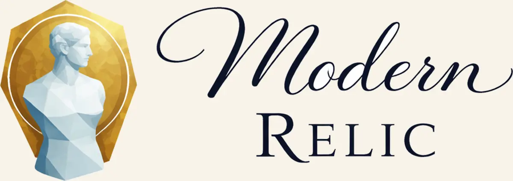

Modern Relic blends old-world texture, artifact-like character, and modern digital making into a design-forward object line.
Open Modern Relic Get in touch
Get in touch
Ventures
Ventures are where internal ideas, design experiments, and venture-ready concepts live once they deserve their own identity.
Current ventures

Modern Relic blends old-world texture, artifact-like character, and modern digital making into a design-forward object line.
Open Modern Relic
Muse’s Emporium is curated for performers: costume support, props, logos, media packs, and mentoring with an elegant handmade sensibility.
Open Muse’s EmporiumLoreLoom is a writer-first storytelling platform for nonlinear minds, with flexible tree-style story and codex structures that adapt to each creator’s flow.
Seeking beta testers and workflow feedback.